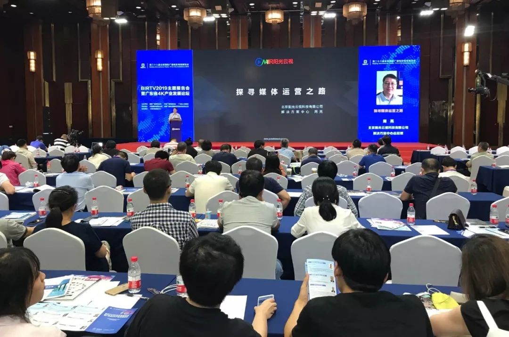
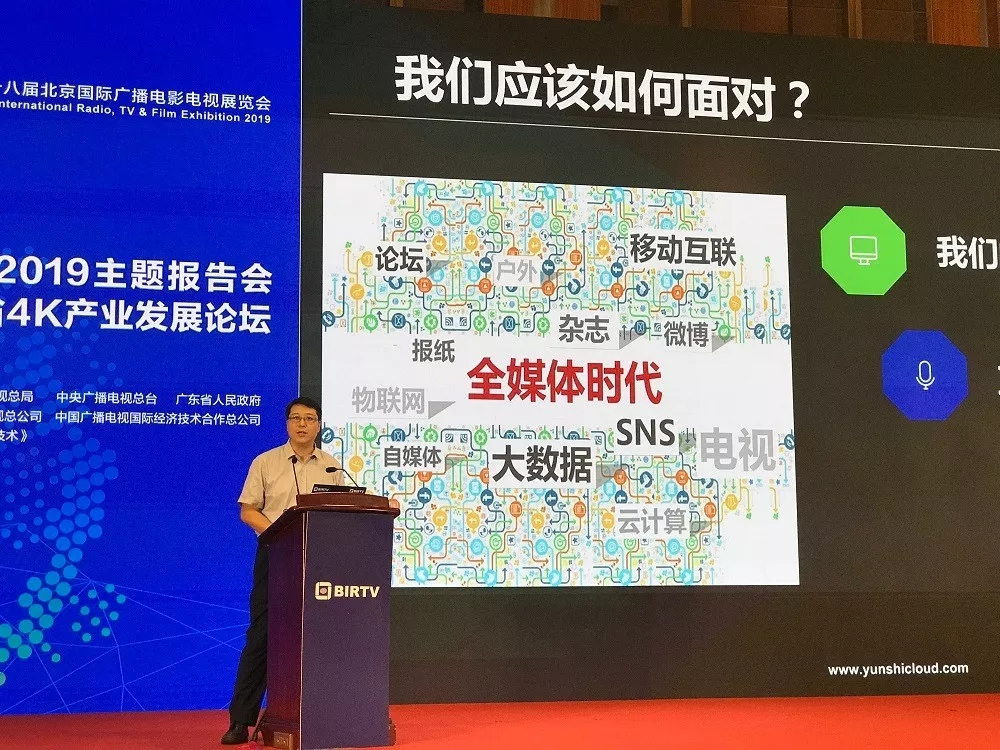
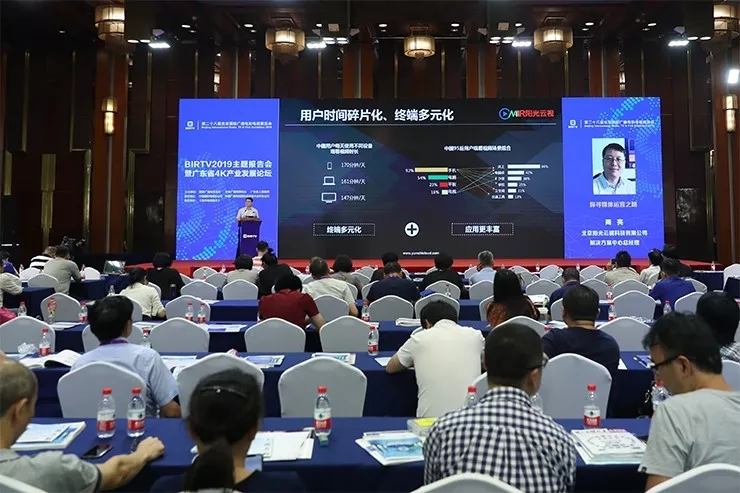
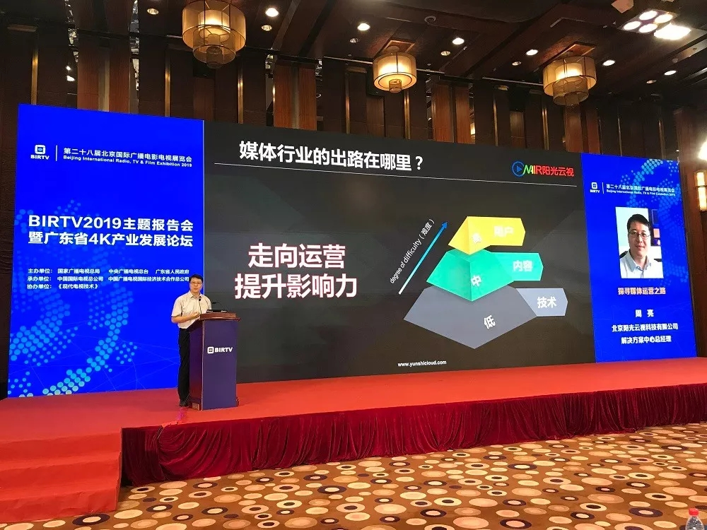

BIRTV2019 | 主论坛：阳光云视解决方案中心周亮《探寻媒体运营之路》
2019年8月20日，BIRTV2019主题报告会暨广东省4K产业发展论坛在北京国际饭店紫金厅举行，北京阳光云视科技有限公司解决方案中心总经理周亮出席报告会并发表题为“探寻媒体运营之路”的主题演讲，从短视频及新媒体发展趋势出发，以落地方法为依据，为广大行业及融媒体发展建言献策。


如何面对现阶段媒体环境
随着互联网的深入发展，广大用户使用手机等移动端设备观看视频的时间越来越长，各大互联网流量平台争夺用户的中心也都放在了各自产品的使用时间和频率等关键指标，以用户运营到内容运营再到技术运用的漏斗模式也已基本形成，而传统媒体行业基本都是通过由技术平台到内容中心再到用户运营的逻辑发展，所以要着重自身优势倡导建设技术和内容平台，通过技术运营与内容运营形成对用户的覆盖，最终实现全媒体融合。

短视频是风口还是趋势
数据显示，如今短视频的市场规模已经超过1800亿，同比增长超过了700%，短视频的头部网红变现能力直线上升，而容易形成短视频爆款的内容以轻松娱乐、新鲜事物为主，高颜值、情感共鸣、萌系等是其常用的内容手段。这些头部网红的内容生产没有专业的技术支撑，没有权威的媒体渠道发布，依旧可以获得广大用户的喜爱，自身内容定位是原因之一，另一原因其实是依靠MCN等网红经济机构的运营，如果将优质爆款内容筛选后搬上融媒体平台，即可吸引用户带来流量，又为优质内容做了传播。同时，专业媒体可充分发挥在内容制作中具有的独特资源优势，以媒资、主持人、场景等制作优质内容，以融合的姿态发布至各大互联网流量平台，亦可快速引发大众关注，提高媒体传播力、影响力，最终实现全媒体发展目标。最近，央视新闻推出的《主播说联播》栏目，以竖版短视频的形式大大提高了新闻评论的互动性，内容更加生动，引发了热烈讨论并得到了良好反响。
以运营为核心提升影响力
阳光云视通过多年创新发展与大量融媒体建设案例总结，积累了一大批基于内容采编、制作生产、分发传播的核心优质技术，这些技术既有专业媒体制作工具，又有视频能力专业工具，将技术能力与平台能力相结合，充分助力各省、市、县级融媒体平台建设，以技术+数据支撑内容运营，共创全媒体新时代。
